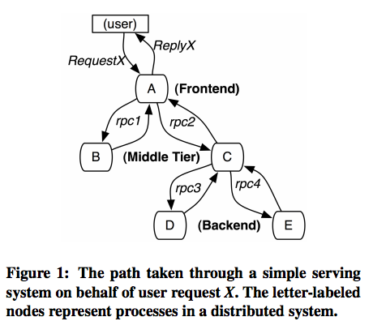
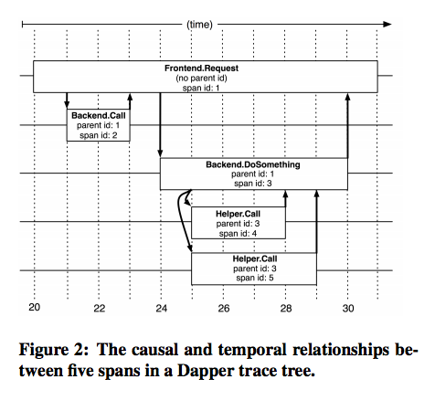

Link: https://ai.google/research/pubs/pub36356
This is a 2010 paper that presents Dapper, a tracing infrastructure from Google, to solve problems at Google scale, in its massive scale distributed systems, where a service could invoke very deep RPC calls across different nodes in the cluster, which makes tracing quite challenging.
Highlights and takeaways:
Design
The paper introduces the following concepts to describe the system:
tree, span, and annotation.
tree

A simple service call could span a few different nodes in the system, forming a calling tree between different services, as shown above in figure1.
span

In Dapper trace tree, the tree nodes are basic units of work which is
referred to as spans. The edge indicates a casual relationship a span
and a parent. See figure2.
Each trace has a single trace id across all its children spans. Each span has one id, and records the relationships between parent and child. See figure2. Parent spans always starts before child and ends after children finish.
Dapper is designed to follow distributed control paths with near-zero intervention from the application developers, by instrumenting the following libraries:
- thread library: Dapper attaches a trace context to thread-local storage.
- asynchronous control flow library: Dapper instruments the control flow library to ensure all async callbacks store the context of their creator.
- IPC library: All Google’s inter-process communication is built around a single RPC framework, for all communications on same machine, and across network.
annotation
The instrumentation above is sufficient to derive traces of complex distributed systems and made transparent to users, but Dapper also provides capabilities for users to annotate important sections to their applications.
Sampling
To improve performance, one of Dapper’s design decision is sampling. Dapper team noticed that Sampling at a relative small rate can get pretty good results with insights to critical performance issues.
Trace collection
Trace collection is divided to the following steps:
- Dapper span data is written to local log files.
- Local logs are collected by Dapper daemons.
- And are finally written to Bigtable.
- User can query and analyze different traces with a Dapper web interface, which aggregates all logs and sort by tracing ids.